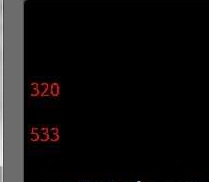
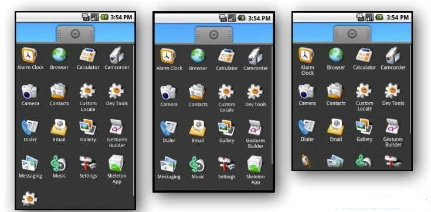
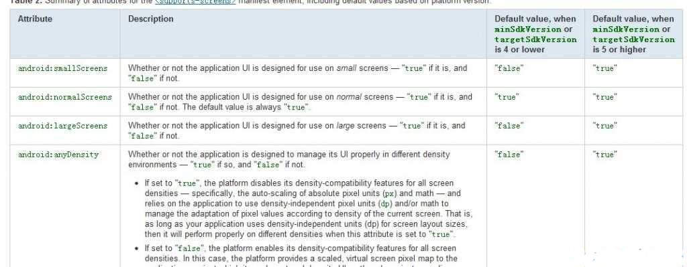
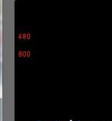

【Android2D游戏开发二十一】Android设备谎言分辨率的解决方案
新建的Emulator-配置为：WAGA800其分辨率是800*480的设备模拟器，当我们程序中在取得其Height和Width的时候发现，总是320*533，明显是系统对我们撒了谎！如下图：

下面是官方文档原文:
http://androidappdocs.appspot.com/guide/practices/screens_support.html
那么为什么系统会对其分辨率进行撒谎呢？ 其作用是什么呢？
简单的来说，在SDK1.6 （sdk version 4）以后，Android 增加了新功能“支持多屏”,所谓这项新功能也就是为了让我们的游戏、软件能在不同的分辨率，不同机型上一样流畅、玩美运行，其作用一来减轻我们的移植工作量，二来更好的体现Android 越来越强劲的势头。
自适应效果如下图：(WVGA高密度（左），中密度的HVGA（中），低密度和QVGA（右)

在不同的分辨率上想玩美的跑起来一款游戏和软件，有两种方式，一种是我们做游戏的时候都做成自适应屏幕的游戏方式，比如我们取坐标都根据屏幕的宽、高、图片的宽、高等等而不是写成死的位置坐标。 第二种那就是Android os 在1.6以后的这种自适应技术；
但是有些时候显然Android提供的这种自适应有时候我们不需要，或者说不太适合我们的开发，（其实这也类似于现在的游戏引擎，很多人都在问我开发游戏用什么引擎，其实公司有自己的引擎。我自己写游戏不用引擎，因为没有一款游戏引擎适应所有的游戏类型开发，例如用RPG的引擎去做个益智连连看？是不是搞了点 - -...当然现在市面上已经有不少的游戏开发引擎，但是使用别人的游戏引擎，对于开发来说，虽然提高了开发效率，缩短了开发周期，但是对于其扩展性不得不说很是头疼的一件事情，so~建议大家去吸收这些开源引擎的知识和技术，自己整理出一份属于自己的游戏引擎，毕竟自己的扩展起来就容易多了！而不能去一谓的去使用和强加灌输别人的思维方式到自己脑中）咳咳、回到主题上来，刚才说了，有时候我们并不想使用Android os 提供的自适应，而是我们自己去写自适应，这样更加的灵活.
下面给讲解如何避开Android os的自适应的方法：
先来看下官方的一段话：

这里是从官方文档中截取的一段，这里是在说，当Android sdk的版本是4或更低与版本为5或更高的之间的区别；
那么从这里可以得知Android sdk 1.6(version 4)之前是不支持自适应的，那么解决的方法也就有了；
我们只需要在AndroidMainFest 中,定义<uses-sdk android:minSdkVersion="4" /> 就OK了！
<?xml version="1.0" encoding="utf-8"?><manifest xmlns:android="http://schemas.android.com/apk/res/android"
package="com.desmo.testAd" android:versionCode="1" android:versionName="1.0">
<application android:icon="@drawable/icon" android:label="@string/app_name">
<activity android:name=".Test" android:label="@string/app_name">
<intent-filter>
<action android:name="android.intent.action.MAIN" />
<category android:name="android.intent.category.LAUNCHER" />
</intent-filter>
</activity>
</application>
<uses-sdk android:minSdkVersion="4" />
</manifest>
然后我们看看修改后xml后的运行截图：

这样就正常啦。
第一："一般来说800X480的density为240，这样得到的系数大小为240/160，所以320X533再乘上1.5就是正确的像素，这个需要结合屏幕的density来计算。"
这段话说的没错，（公式的由来官方api 文档中有写）Android SDK 1.6 以上才可以通过 canvas.getDensity(); 得到密度，canvas.setDensity(240);设置密度，但是很多群友设置过密度的都知道这根本没有任何的效果。然后我就想通过利用比值去对canvas进行缩放处理处理画布使其回到正确的分辨率（像素），虽然目的达到了，但是发现失真效果很严重。所以我认为还是用xml定义minSdkVersion 的方式方便、实用。但是又出现了下一个问题：
第二:“<uses-sdk android:minSdkVersion="4"/>，加了这句话之后SDK=3时候（也就是SDK1.5的时候），做出来的APK不就装不成了吗？”没错，我们一旦定义了应用程序运行的最低版本，那么低于此版本的都无法安装此应用，但是除了利用密度比值，现在我也没有其好的解决方案。
总结：先说一句，我们这种使用定义应用程序运行的最低版本的方式来解决，存在两种弊端：
第一： 低于1.6sdk无法安装程序。
第二：影响高版本的功能，例如我们的BlueTooth（蓝牙）是在2.0+的api中才有的。
但是可以利用密度比值，但是最好不要，毕竟失真严重。